Limits
Graphical Limits
A limit is the value a function, \(f(x)\) , approaches as \(x\) approaches a value.
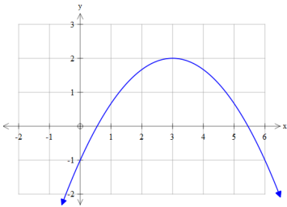
For this graph we can approach \(x=3\) from the left or right, and see that \(f(x)\) approaches 2 .
Limit as \(x\to3^+\) of \(f(x)\) is 2 [Right-hand limit]
Limit as \(x\to3^-\) of \(f(x)\) is 2 [Left-hand limit]
\[f\left(x\right)=-\frac{1}{3}\left(x-3\right)^{2}+2\]
| \(x\to3^-\) | \(f(x)\) | \(x\to3^+\) | \(f(x)\) |
|---|---|---|---|
| 2.9 | 1.997 | 3.1 | 1.997 |
| 2.99 | 1.99997 | 3.01 | 1.99997 |
| 2.999 | 1.9999997 | 3.001 | 1.99999997 |
| 2.9999 | 1.999999997 | 3.0001 | 1.9999999997 |
From the tables, we can see to approach a number means to get “infinitesimally close”
To approach a value also means to get close but NEVER equal the number.
| Definition: Limit of a Function |
|---|
| We denote the limit as \(\lim_{x\to a}f(x)=L\) ， \(x\neq a\) and say “the limit of \(f(x)\) as \(x\) approaches \(a\) is \(L^{\prime\prime}\) |
| Condition for Existence of The Limit |
|---|
| \(\lim_{x \to a} f(x) = L \iff [\lim_{x \to a^-} f(x) = \lim_{x \to a^+} f(x) = L]\) That is: If the left and right hand limits exist and are equal, then the limit exists. |
Exercise
Determine left and right-hand limits as indicated for the following graphs. Determine if the limits exist.
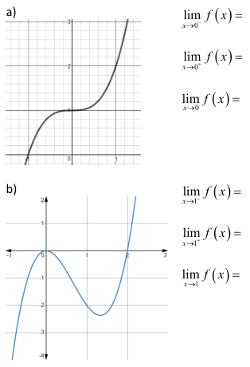
Continuity
Most graphs we will study in this course are smooth simple functions:
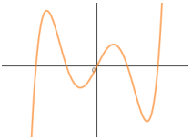
Think: you can draw the graph from \(-\infty\) to 00 without lifting your pencil
These functions are called continuous
| Continuity of a Function |
|---|
| A function \(f(x)\) is continuous at \(x = a\) if: 1. \(f(a)\) exists 2. \(\lim_{x \to a} f(x)\) exists 3. \(\lim_{x \to a} f(x) = f(a)\) |
Graphically continuity means that over a given interval there are no holes,breaks or “sharp peaks”in the graph over that interval.
If a function is not continuous we say it is discontinuous.
The following graphs are discontinuous:
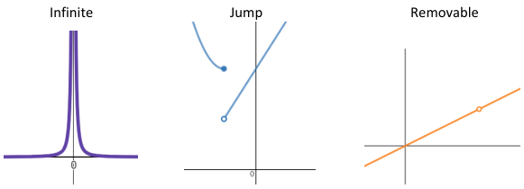
They are respectively caused by:
\[ \begin{align*} y &= \frac{1}{x^2}\\ f(x) &= \begin{cases} (x+1)^2+4,&x\leq-1\\2x+4,&x>-1 \end{cases}\\ y &= \frac{x(x-3)}{2(x-3)} \\ \end{align*} \]
[!NOTE] A removable discontinuity will not show on your graphing device!
Exercise
Sketch thefollowing graphs,state any types of discontinuity and anyvalues not in the domain.
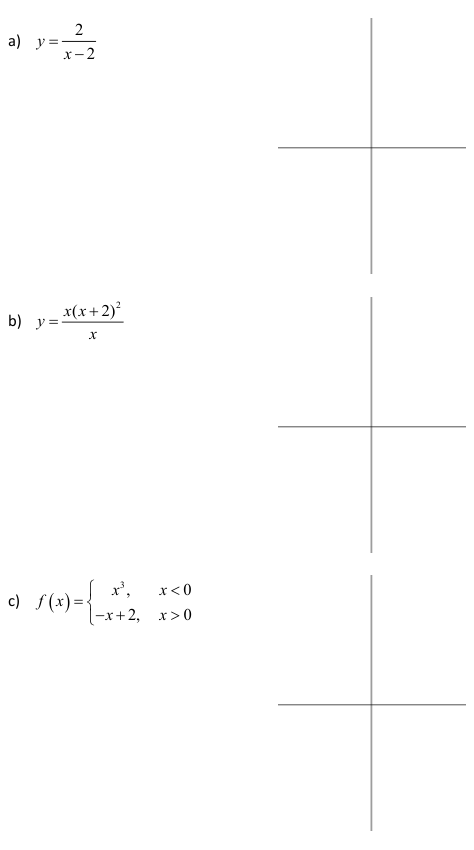
Example:
Determine left and right hand limits as indicated for the following graphs. Determine if the limits exist.
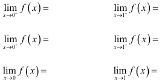
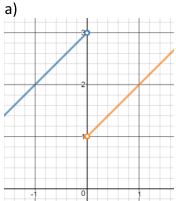
\[\begin{gathered} \operatorname*{lim}_{x\to0^{-}}f\left(x\right)= \operatorname*{lim}_{x\to-1^{-}}f\left(x\right)= \\ \operatorname*{lim}_{x\to0^{+}}f\left(x\right)= \lim_{x\to-1^{+}}f\left(x\right)= \\ \operatorname*{lim}_{x\to0}f\left(x\right)= \operatorname*{lim}_{x\to-1}f\left(x\right)= \end{gathered}\]
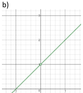

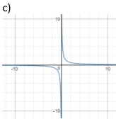
Algebraic Limits
From the graphs section, we see that finding limits for certain functions is very easy.
Examples
The graphs below are all continuous.
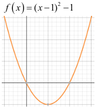
\(\lim (x-1)^2-1=\)
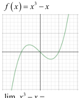
\(\lim_{x\to-1}x^3-x=\)
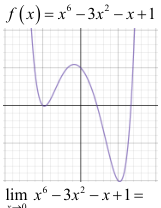
For all values of a, \(\lim_{x\to a}f(x)=f(a)\)
For graphs that are discontinuous or have restricted domains, as long as we choose the points that belong to the domain they are continuous but otherwise discontinuous.
Examples
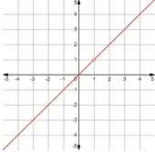
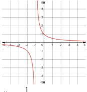
\[\lim_{x\to1}\frac{1}{x+1}=\]
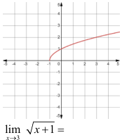
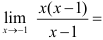
| Direct Substitution Rule |
|---|
| For the limit \(\lim_{x\to a}f(x)\): If \(a\) is in the domain of \(f(x)\), then we can plug \(a\) into it. so \(\lim_{x\to a}f(x)=f(a)\) |
Exercises
Determine the following limits using Direct Substitution if possible
\(\lim_{x\to4}\left(x^2-7\right)\) \[\text{b)}\lim_{x\to2}\bigl(2x^2-3x+2\bigr)\]
- \(\lim_{x\to0}\Big(e^x-x^2\Big)\)
\[\text{d)}\lim_{x\to5}\sqrt{x^2-9}\]
### Example 2:
Determine the following limits using Direct Substitution if possible
- \(\lim_{x\to0}\frac{x(x-2)}{(x-2)}\) \[\text{b)}\lim_{x\to2}\frac{x^2-4}{x+2}\quad\text{c)}\lim_{x\to2}\frac{x^2-4}{x-2}\]
\[\text{d)}\lim\limits_{x\to-1}\frac{1}{x}\quad\text{e)}\lim\limits_{x\to8}\sqrt{x-4}\quad\text{f)}\lim\limits_{x\to10}\frac{1}{\sqrt{x-9}}\]
When a is NOT in the domain for the limit \(\lim_{x\to a}f(x)\) : We can try some ALGEBRA.
Some common methods of algebraic simplification include.
- Factor and cancel
- Combining fractions
- Rationalization
Limits by algebraic simplification: Common methods
Factor and cancel
\[\begin{aligned}\lim_{x\to-4}\frac{x^2+3x-4}{x+4}\end{aligned}\]
Splitting the midterm
For \(ax^2+bx+c\)
We take factors of \(ac\) such that their: - Sum = \(b\) - Product = \(ac\)
Steps:
ⓘ Note
The factors here refer to the constants in \((x+a)(x+b)\), not the zeroes (\(x=-a,~-b\)) themselves.
| Cases | Sign of factors |
|---|---|
| \(b\) & \(ac \to +ve\) | Both factors \(+ve\) |
| \(b\to+ve\), \(ac\to-ve\) | Bigger factor \(+ve\), smaller factor \(-ve\) |
| \(b\) & \(ac \to -ve\) | Smaller factor \(+ve\), bigger factor \(-ve\) |
| \(b\to-ve\), \(ac\to+ve\) | Both factors \(-ve\) |
Combining fractions
\[\lim\limits_{x\to2}\Bigg(\frac{1}{4x-8}-\frac{1}{x^{2}-4}\Bigg)\]
Rationalization (Conjugate)
\[\lim_{x\to0}\frac{\sqrt{1+x}-1}{x}\]
Limits using tables
If we cannot fix the discontinuity algebraically, to see if the limit exists we can: 1.lookat the graph (if available)
2.make table of values
Remember:
·If the left and righthand limits exist and are equal,then thelimit exists. If the left and right hand limits do not exist or are not equal, then the limit. does not exist.
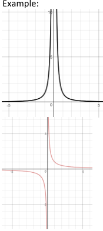
The \(\lim_{x\to0}\frac1{x^2}\) can not e factored, owever raphiclly we can assess that, \[\lim_{x\to0^-}\frac{1}{x^2}=\]
\[\lim_{x\to0}\frac{1}{x^{2}}=\]
\[\lim_{x\to0^+}\frac{1}{x^2}=\]
So
For \(\lim_{x\to0}\frac1x\) wecnsa from thegraph tht:?
\[\lim_{x\to0^-}\frac1x=\]
\[\lim_{x\to0^+}\frac1x=\]
\[\text{o}\lim_{x\to0}\frac{1}{x}=\]
Example: Evaate te t \(\lim_{x\to3}\frac{\sqrt{x-2}}{x-3}\)
Since we can not directly substitute,there is no obvious algebraic method to use and we do not have the graph we will use tables to find the limit..
| x | y |
|---|---|
| 3.1 | |
| 3.01 | |
| 3.001 | |
| 3.0001 |
| x | y |
|---|---|
| 2.9 | |
| 2.99 | |
| 2.999 | |
| 2.9999 |
Conclusion: \[\lim_{x\to3}f\begin{pmatrix}x\end{pmatrix}=\]
\[\lim\limits_{x\to3^+}f\begin{pmatrix}x\end{pmatrix}=\]
\[\lim\limits_{x\to3^-}f\begin{pmatrix}x\end{pmatrix}=\]
Practice Evaluate:
\[..\quad\lim_{x\to4}\frac{x^{2}-4x}{x^{2}-3x-4}\]
\[2.\quad\operatorname*{lim}_{x\to3}{\frac{x^{2}+x-12}{x+6}}\]
\[.\quad\operatorname*{lim}_{x\to4^{+}}{\frac{\sqrt{x}-2}{4-x}}\]
\[\lim_{x\to0}\Bigg(\frac{1}{x}-\frac{5}{x^{2}+5x}\Bigg)\]
- Find the following limits by simplifying algebraically if possible \[\lim_{x\to-1}\frac{x^2-1}{x+1}\]
\[\lim_{h\to0}\frac{\left(3+h\right)^2-9}{h}\]
\[\lim_{x\to2}\frac{2x^2-3x-2}{x-2}\]
\[\lim_{x\to3}\frac{x^2-2x-3}{x-3}\]
\[\lim_{x\to1}\frac{x^2-1}{x-1}\]
\[\lim_{x\to1}\frac{x^2+x-2}{x^2+2x-3}\]
6.Assess the limits \[\lim_{x\to-1}\frac{x-1}{x+1}=\]
\[\begin{array}{rl}{\lim_{x\to3}\frac{-x}{\left(x-3\right)^{2}}=}\end{array}\]
7.Using the table below, determine the left-and right-hand limits of the piecewise function, as \(x\to0\)
\[f\left(x\right)=\begin{cases}x+1,&x<0\\x-1,&x>0\end{cases}\]
\(\lim_{x\to0^-}f(x)=\)
| \(x \to 0^{-}\) | \(f(x)\) |
|---|---|
| -1 | 0 |
| -0.1 | 0.9 |
| \(x \to 0^{+}\) | \(f(x)\) |
|---|---|
| 1 | 0 |
| 0.1 | -0.9 |
\(\operatorname*{lim}_{x\to0^{+}}f(x)=\)

Consider the case where we want \(x\to0\) and \(x\) only appears in the denominator of a rational expression.In such a casewe would basically have some number divided by a “really small” positive/negative number.This will give a“really big positive/negative result. Since ‘really big’ occurs often in limit calculations we give it
the special symbol 00 , called infinity. Don’t forget to check the left and right hand limit.
Example valuate (a) \(\lim_{x\to0}\frac{1}{x}\) (b) \(\lim_{x\to0}\frac{1}{x^2}\)
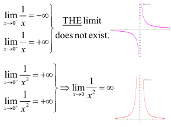
\(-0.1\quad -10\quad 100\) \(-0.01\quad -100\quad 10000\) \(-0.001\quad -1000\quad 1000000\) \(-0.0001\quad -10000\quad 100000000\) \(0.0001\quad +10000\quad 1000000000\) \(0.001\quad +1000\quad 1000000\) \(0.01\quad +100\quad 10000\) \(0.1\quad +10\quad 100\)
Example: Sketch the graphs to assess the following limits
- \(\lim_{x\to0}\frac7{3x^4}\) 6 \(\lim_{x\to0}\frac{5x}{2x^3}\) \(\lim_{x\to0}\frac{8}{2x^3}\) d \(\lim_{x\to0}\frac{-5}{x^6}\)
When \(n\) is even, \(\lim\limits_{x \to 0} \frac{1}{x^n} =\) and \(\lim\limits_{x \to 0} \frac{-1}{x^n} =\)
When \(n\) is odd, \(\lim\limits_{x \to 0} \frac{1}{x^n} =\) and \(\lim\limits_{x \to 0} \frac{-1}{x^n} =\)
Practice: Evaluate the following limits.
司\(\lim_{x\to0}\frac5{x^7}\) \(\lim_{x\to0}\frac2{x^8}\) \(\lim_{x\to0}\frac{5x}{x^9}\) \(\lim_{x\to0}\frac{-2}{x^{11}}\) \(\lim_{x\to0}\frac{-2}{x^{10}}\)
Limit as x goes to infinity \(x\to\infty\)
Consider the special case where \(x\to\pm\infty\) and, as above, \(x\) appears only in the denominator of a rational expression. In such a case we would basically have some number divided by a “really big” positive/negative number. This will of course give a “really small” positive/negative result that, for large enough \(x\) will approach zero.
Example:Evaluate:
- \(\lim_{x \to \infty}\frac1x\)
| x | \(1/x\) |
|---|---|
| 10 | 0.1 |
| 100 | 0.01 |
| 1000 | 0.001 |
| 10000 | 0.00001 |
- \(\lim_{x \to \infty}\frac1{x^2}\)
| x | \(1/x^2\) |
|---|---|
| 10 | 0.01 |
| 100 | 0.00001 |
| 1000 | 0.0000001 |
| 10000 | 0.0000000001 |
In the above table of values you can see that the bigger we make x, the smaller we make the fraction; the result approaches zero.
\(\lim_{x \to 0^+} \frac{1}{x^n} = 0\)
To evaluate limits as \(x\to\infty\) algebraically where there are \(x\) termsinboth the numerator and denominator, the common practice is to:
- Divide both the numerator and denominator by the highest power of \(x\) that appears in the denominator 2. Simplify 3. Using \(\lim_{x\to\infty}\frac1{x^n}=0\) ,take the limit of each term as \(x\to\infty\)
Complete the examples below using this method. Once completed we should see a pattern that will help us answer these questions quickly
Example 7: \[\lim_{x\to\infty}\frac{x^2+1}{2x^2+3}\]
- \[\lim_{x\to\infty}\frac{3x^8+2x^3-3x}{6x^7+9x}\]
\[\lim_{x\to\infty}\frac{x^2-4}{x-2}\]
\[\lim_{x\to\infty}\frac{5x^3+x}{x^5-4x^4}\]
\[\lim_{x\to\infty}\frac{x^3-4}{x+3}\]
Summary:
If the highest degree in the numerator is larger than the highest degree of the denominator, the limit will be infinity. If the highest degree in the denominator is larger than the highest degree of the numerator, the limit will be 0.
If the highest degree in the numerator and denominator equal, you can use the coefficients to determine the limit.
Practice:
1.Find the following limits. \[\lim_{x\to0}\frac{x^2+x}{x}\]
\(\operatorname*{lim}_{x\to3}(3x-2)\)
\(\lim_{x\to4}\sqrt{x^2-7}\)
\[\lim_{x\to2}\frac{4x^2-8x}{x-2}\]
\[\mathbf{f})\quad\operatorname*{lim}_{x\to4}{\frac{\left|x-4\right|}{x-4}}\]
\[\lim_{x\to3}\frac{x^2-2x-3}{3-x}\]
\[{\textsf{h)}}\quad\operatorname*{lim}_{x\to\infty}{\frac{x-1}{7x+4}}\]
\[\lim_{x\to\infty}\frac{3x^2+4.5}{x^2-1.5}\]
\[\text{i)}\quad\lim_{x\to0}\frac{\sqrt{x+1}-1}{x}\]
\[\text{j)}\quad\lim_{x\to1}\frac{x^3-1}{x-1}\]
\[\mathrm{k)}\quad\lim_{t\to\infty}\frac{\sqrt{t^2-16}}{t+1}\]
\[1)\quad\lim_{x\to-3}\frac{x^2+x-6}{x+3}\]
\[\text{m)}\lim_{x\to\infty}\frac{1-2x^2}{\left(4x+3\right)^2}\]
ANS:
\[\begin{aligned}&\text{VS:}\\&\left(1\right)1\quad\left(2\right)7\quad\left(3\right)x\geq4,soonly\lim_{x\to4+}\sqrt{x^{2}-7}=3\quad\left(4\right)8\quad\left(5\right)-4\\&&&LHL=-1\\&\left(7\right)3\quad\left(8\right)+\quad\left(9\right)\frac{1}{2},rationalizenumerator\quad\left(10\right)3\quad ofxis1,whichbecomes\quad\left(12\right)-5\\&&&2undertheradical\end{aligned}\]
2.Find the points of discontinuity of the function(i.e.,find domain values that must be omitted),
\[f(x)=\frac{x^2+2x+17}{x^2-1}\]
3.Find the following limits:
\[\begin{array}{ccccccccccccccccccccccccccccccccccccccccccccccccccccccccccccccccccccccccccccccccccccccccccccccc}\end{array}\]
- \(\lim_{x\to7}\bigl(x-3\bigr)\) d) \(\lim_{x\to0}\frac{3x^3-x}{7x}\) \[\lim_{x\to2}\frac{2x^2-3x-2}{x-2}\]
h lim(x² -7) g \(\lim_{x\to2}\frac{1}{x-2}\) \[\lim_{x\to2}\frac{x^2-4}{x-2}\]
Show that the following limit does not exist as \(x\to2\) \[f(x)=\begin{cases}4x^2-16x+18,x<2\\2\bigl(x+1\bigr),\quad x>2\end{cases}\]
Use the graph of \(f(x)\) to find the limits.
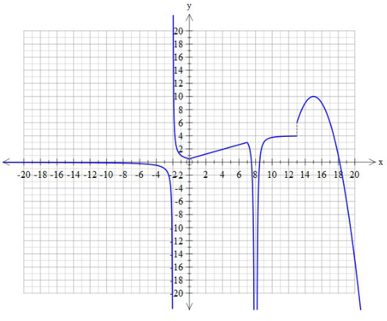
limf(x)=
\(\lim_{x\to-\infty}f(x)=\)
c） lim f(x)=
\[)\quad\operatorname*{lim}_{x\to-2}f\left(x\right)=\quad\mathrm{e})\quad\operatorname*{lim}_{x\to8}f\left(x\right)=\quad\mathrm{f})\quad\operatorname*{lim}_{x\to13}f\left(x\right)=\]
The Derivativee
Slope of a Straight Line.
We know that the slope of a line is calculated between two points on the line
We can find the slope graphically using rise over run (always go left to right)
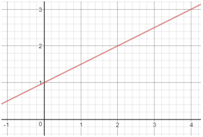
Or we calculate it using two points:
\[Slope=\frac{\Delta y}{\Delta x}=\frac{y_2-y_1}{x_2-x_1}\]
The slope between two points on a curved graph is called the Secant Line.
We can find the slope of this line:.
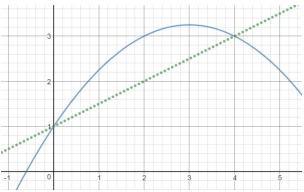
And, we can find the equation of the Secant line: Point-Slope Form \[y-y_1=\dot{m(x-x_1)}\]
Slope-Intercept Form
\[y=mx+b\]
The secant is also called the Average Slope of the curve between the two xvalues.
\[AverageSlope=\frac{\Delta y}{\Delta x}\]
Example: Find the average slope (slope of the secant line)between \(x=1\) and \(x=2\) forthe
function \(f(x)=x^{2}-6x+8\)
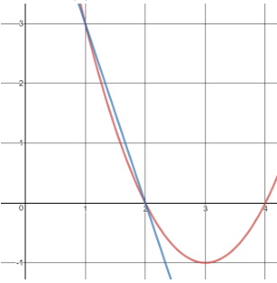
Find the equation of thesecant line:
Example: For the curve \(y=x^3-\frac12x+1\) ,find the average slope betwen \(x=1\) and \(x=2\)
Find the equation of this secant line
Practice
1.Calculate the average slope of the graphbelow between \(x=2\) and \(x=4\)
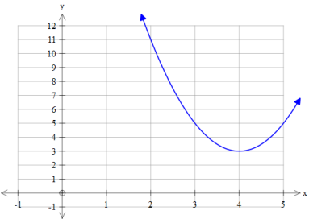
2.For the two lines in the graph: a.Calculate the slope
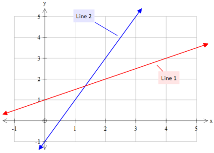
b.Find the equation of each line.
The actual slope of a curve is represented by aTangent Line.
Graphically the Tangent Line:
a)istheslope of the curve atonepoint b) touches the curve at only that point
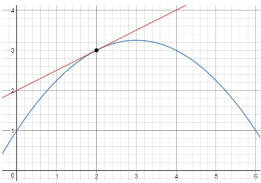
Algebraically the Tangent Line is much more dificult to define and will be the focus of thisunit.
The Tangent Line
We need 2 points to calculate slope.Since the tangent line only touches at 1 point, we can use the secant line to approximate the tangent line:
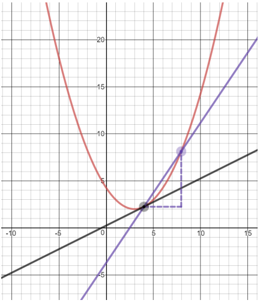
But thiswould be dividing by zero!
We can shrinkthe distance between the twopoints until \(\Delta x=0\) .
\[\overline{\lim_{\Delta x\to0}\frac{f(x+\Delta x)-f(x)}{\Delta x}}\]
The Delta Process - Definition of the Derivative.
Previously we used limits to find the slope of the tangent at a particular value of \(x\) Algebraically,it is more useful toknow the slope at any value of \(x\) . In this case, we leave \(x\) in theequation and solve. \[\mathrm{m}_{\mathrm{tangent}}=\lim_{\Delta x\to0}\frac{f\left(x+\Delta x\right)-f\left(x\right)}{\Delta x}\]
For \(f(x)=x^{2}\)
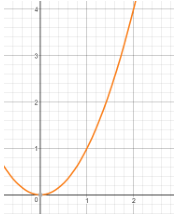
This is a function that gives us the slope of the tangent line at any \(x\) \[x=0\]
\[x=1\]
\[x=-1\]
Definition: The derivative of a function expressed as a function is.
\[f'\left(x\right)=\lim_{\Delta x\to0}\frac{f\left(x+\Delta x\right)-f\left(x\right)}{\Delta x}\quad\text{OR}\quad f'\left(x\right)=\lim_{h\to0}\frac{f\left(x+h\right)-f\left(x\right)}{h}\]
It isread“The derivative of \(f\) withrespect to \(x^{\prime\prime}\) or \(“f\) -prime of \(x^{\prime\prime}\)
Derivative Notation
Some common notations for the derivative of \(y=f(x)\) are:
y’ \quad D_x y \quad f’(x) \quad \frac{dy}{dx}
The process of finding a derivative is called differentiation..
Remember: At a point \((x,y)\) on a curve,
The derivative The slope o the = The slope of the tangent line curve
Example: Find the function for the slope of the following functions using the definition of the
derivative. a) \(f(x)=5x^{2}-1\) \[\begin{matrix}\text{b)}&f(x)=2x^2+3x\end{matrix}\]
Example: Find the derivative of \(f(x)=-4(x-2)^{2}+4\) using the definition
\[f'(x)=\lim_{\Delta x\to0}\frac{f(x+\Delta x)-f(x)}{\Delta x}\]
\[ \begin{align*} f(x)=-4(x^2-4x+4) \\ &= -4x^2+16x-16 \\ f(x+h) = \end{align*} \]
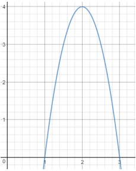
What is the slope at \(x=1\) ？
x=2? x=3?
Practice
Find the derivative of the following functions by the delta-process
\[y=-4x+2\]
\(y=6x-2x^{2}\)
y=x2+5x-2
As you can see from above, using the delta-process can be very tedious and timeconsuming.Starting with the delta-process and some general typefunctions we can develop some simple rules that willhelp usto solve forthe derivative quickly and easily.
Basic Derivative Rules
Algebraically and graphically we can find patterns to the derivative that make the process easier. There are also many notations for derivatives, depending on the function you are
given:
Function: \(y=2x^{2}+3x\) either \(f(x)=2x^{2}+3x\) Derivative: \(\frac{dy}{dx}=4x+3\) \(\frac{d(2x^{2}+3x)}{dx}=4x+3\) \(f'(x)=4x+3\) \(\quad y'=4x+3\) \(\quad \frac{d}{dx}(2x^{2}+3x)=4x+3\)
Constant Rule: For a function \(f(x)=c\) where c is a constant number \(f'(x)=0\)
Algebraically, \[f'(x)=\lim_{h\to0}\frac{f\left(x+h\right)-f\left(x\right)}{h}\]
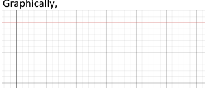
Example: Find the derivative of the following
\[\text{b)}f(x)=e\]
\[\text{c)}y=\sin(2\pi)\] a) \(y=5\)
Power Rule
For a variable raised to a constant power n,
\[\frac{d}{dx}\Big(x^n\Big)=nx^{n-1}\]
Example: Find the following derivatives: a) \(y=x^3\)
\[)\:f(x)=x^{8}\quad\mathrm{c})\:y=x\quad\mathrm{d})\:f(x)=x^{2}\]
Constant Multiple Rule
For a constant \(a.\)
\[\frac{d}{dx}\Big(ax^n\Big)=a\Big(nx^{n-1}\Big)\]
Example:Find the derivative of each of the following:
\[f(x)={\frac{x^{4}}{8}}\]
\[y=3x^{5}\quad(b)\quad y=-6x^{3}\quad(c)\quad y=\frac{1}{3}x^{9}\]
Sum & Difference Rule
For any number of terms,
\[\frac{d}{dx}\big(f(x)+g(x)\big)=f'(x)+g'(x)\]
Example: Find the derivative of each of the following:.
\[\mid y=3x^{5}+7x^{3}-3x+2\quad(\mathbf{b})\quad y=-6x^{3}-5x\]
Often we need to rewrite a power to use the rule:.
Example: Find the derivative of each of the following:.
\(y=\sqrt{x}\)
\(f(x)=\frac{1}{x}\)
\(y=x\sqrt[3]{x}\)
\[ \begin{align*} y = x \cdot x^{1/3} \\ f' = x \end{align*} \]
$$
\[(\text{e})\:y=\frac{x^2-3x}{x^2}\]
\[\mid y={\frac{x}{\sqrt{x}}}\]
\[ \begin{align*} y = x^{1-1/2} \\ y = x^1/2 \\ f' = \frac{1}{2}x^{-1/2} \\ \end{align*} \]
Example: Find the derivative of each of the following
\[(\mathbf{b})\:y=x^4+3x^3+x^2-x+2\]
\[y=x^{2}+7x\]
- \(y=2x-4x^{3}\)
\[y={\frac{2}{x^{2}}}\]
Example:Find the slope of the curve at theindicated point:
\(y=9x-x^{3}\) at the point(2,10).
\(y=x^4-\frac12x^2+2\) at the point-2,16)
\(y=4\sqrt[3]{x^2}\) at the point where \(x=8\)
\[\mid y={\frac{\sqrt{x}-x^{2}}{x}}\:\mathrm{at}\:x=4\:.\]
Practice
- Using the definition of derivative find \(f'(x)\) of the following \[f(x)=x^2-2x\]
2.Find the derivative of each of the following
\[\mathbf{b})\:f(x)=7x^{3}-3x^{2}+13\]
\[\mid f(x)=3x-\frac{1}{3}x^{3}\]
\[\mid f(x)=5x^{2}-{\frac{4}{\sqrt{x}}}\]
() \(f(x)=\frac{\pi}{2}x^{8}\)
3.What is the slope of the function \(f(x)=3x^{3}+4x^{2}-6x+3\) at thepoint (-2,7) ?
Product Rule_ \(f(x)g(x)\)
For \(f(x)=4x^{3}\) and \(g(x)=2x^{5}\)
\[f'(x)= g'(x)=\]
For two functions multiplied together, we take the derivative one part at a time:
\[y=\begin{pmatrix}4x^3\end{pmatrix}\begin{pmatrix}2x^5\end{pmatrix}\]
Simplify First (if practical)
\[y=8x^8\]
\[\frac{dy}{dx}= 64x^7\]
Using Product Rule
\(\frac{dy}{dx} =\)
With more complicated functions, it would take us much longer to multiply and use the power rule. The product rule will be faster.
Product Rule
When we have two functions multiplied together,.
\[\frac{d}{dx}\Big(f(x)g\big(x\big)\Big)=f'\big(x\big)g\big(x\big)+f\big(x\big)g'\big(x\big)\]
OR
\[y = u\cdot v \implies \frac{dy}{dx} = uv' + u'v\]
Example: Find the derivative off \(y=\left(2x^{2}\right)\left(3x^{3}\right)\)
Example: Find the derivative off \(y=\left(2x^{3}+3x\right)\left(x^{4}+2x^{2}-6\right)\) (Do not simplify
Example:Find the slope of the tangent to the curve \(y=(3x^2-5)\Big(2x^2-1\Big)\) at \(x=-1\)
Practice:
1.Find the derivative of each of the following.(Simplify the result)
\[\mid y=2x^{3}\left(3x^{4}+x\right)\]
\[\textbf{(b)}y=\begin{pmatrix}3x-2\end{pmatrix}\begin{pmatrix}4x^2+3\end{pmatrix}\] a)
- What is the derivative of the function \(y=\left(2x^{5}-6x+\pi\right)\left(-5x^{2}+e-3x^{7}\right)?\) (Apply the rule, you do not need to simplify the final answer
3.Given \(y=\left(2x-3x^{3}\right)\left(4+5x^{-2}\right)\) , what is ? Simplify the result
- What is the slope of the curve representing the functior
\(f(x)=\left(5x^3-6x^2\right)\left(5x^3-6x^2\right)\) at the point (-1,121)
Quotient Rule \(\frac{f(x)}{g(x)}\)
Again for the quotient rule, we find that taking the derivative all at once will not work.
For \(f(x)=4x^{3}\) and \(g(x)=2x^{s}\)
\[g'(x)=\]
\[f'(x)=\]
For two functions that divide each other,
we take the derivative one part at a time
\[y=\frac{4x^3}{2x^5}\]
Simplify First (if possible)
\[\text{y =}\]
\[\frac{dy}{dx}=\]
Using Quotient Rule
Quotient Rule
When we have two functions dividing each other,
\[\frac{d}{dx}\Bigg(\frac{f(x)}{g(x)}\Bigg)=\frac{f'(x)g(x)-f(x)g'(x)}{\left(g(x)\right)^2}\]
Example: id the derivative of \(y=\frac{3-2x}{x^{2}+2}\)
Examle: ind the derivatie of \(y=\frac{2x^3}{4-x}\)
Eamele in thesoeoteurve \(y=\frac{\left(3x^2-5\right)}{\left(2x^2-1\right)}\) \(x=-1\)
Practice:
1.Find the derivative ofeach of thefollowing \[y=\frac{4}{x^{3}}\]
\[\mathbf{b})\quad y=\frac{e^{2}}{5x^{2}+4x}\]
Find the deriaiveof the funtion \(q(x)=6x^2+\frac{2x}{x+1}\) without geting common denominator?(Apply the rule forpolynomials and the quotient rule when required)
Given \(y=\frac{5x^4+6x}{5x-4}\) ,Whatis \(D_{x}y\)
Wha istheslope o the cuve representin th functon \(P\bigl(x\bigr)=\frac{2x^2+3x}{5-3x}\) at the point(2,-14)?
Chain Rule \(\begin{bmatrix}f\bigl(g\bigl(x\bigr)\bigr)\end{bmatrix}\)
In MA1101 we learned about Composite Functions like \(f\bigl(g(x)\bigr)\) For \(f(x)=x^3\) and \(g(x)=x^{2}+1\) we could,expand, and take the derivative
Expanding is not always practical, sometimes we need the chain rule..
\[y=f(g(x))=\left(x^2+1\right)^3\]
\[\frac{dy}{dx}=\]
Chain Rule
When we have a composite function,
\[\frac{d}{dx}\Big[f\big(g(x)\big)\Big]=f'(g(x))g'(x)\]
Example: Find the derivative of the following functions:
\[y=\left(x^2+4x+6\right)^5\]
\(f(x)=\left(x^{2}-x+1\right)^{3}\)
\(f(x)=\sqrt{5x+x^{2}}\)
\[y=\frac{1}{\left(x^2-5\right)^4}\]
Practice:
1.Find the derivative of each of the following 司\(r=\frac{1}{\left(t^2-2t-5\right)^4}\)
\[y=\sqrt[5]{3x+2}\]
- Fin the sope of the tangent line to the curve \(y=\left(4+3x^2\right)^{\frac43}\)
3.For \(y=\left(4-x^2\right)^{-2}\) What is the slope of the graph of at the point \(\left(3,\frac{1}{25}\right)?\)
- Find the derivative of the function \(q(x)=\left(4x^{2}-3+6x\right)^{18}\)
5.Given \(f\Big(g\big(x\big)\Big)=\Big(x^{2}+1\Big)^{3}+2\Big(x^{2}+1\Big)^{2}+5\) ,what is \(D_{x}f\big(g\big(x\big)\big)\)?
6.What is the slope of the curve representing the function \(P(x)=\sqrt[4]{\left(x^{2}+7x\right)^{3}}\) at the point(14,71)?
Implicit Differentiation
There will be times when we are not able to solve for \(y\) explicitly. For example. given the expression, \[y^5+xy^2+3x^2=5\:,\]
we are unable to get an expression \(y=f(x)\)
Such a function where. \(y\) is defined implicitly as a function of \(x\) (i.e.) \(y\) as a function of itself,which is a function of \(x\) )is called an implicit function
To find \(\frac{dy}{dx}\) when \(y\) is implicitly defined as function of \(x\) , we differentiate each term of the equation with respect to. \(x\) by applying the appropriate rule.
Note: The derivative of \(y\) with respect to \(x\) is \(\frac{dy}{dx}\) (or \(y'\)).
Example: Find \(\frac{dy}{dx}\) if \(x+y=2\)
Exam ple: Find \(\frac{dy}{dx}\) if \(y^{2}+2x^{2}=5\)
Example: Find \(\frac{dy}{dx}\) if \(3y^{4}+xy^{2}+2x^{3}-6=0\)
Example:Find the slope of a line tangent to the curve of \(2y^{3}+xy+1=0\) at thepoint (-3,1).
Mixed Derivatives
So far we have focused on the powerrule,the product and quotient rules, and the chain rule of differentiation. In practice, finding a derivative will often involve. applying some combination of the above rules.Here we will look a few examples
Example: Find the derivative of the following functions
\(f\left(x\right)=\left(\frac{x^3+2x^2}{4-x}\right)^3\)
\(f\left(x\right)=\left(\left(x-7x^{3}\right)\left(14+x^{2}\right)\right)^{11}\)
\[\text{c)}\quad f\left(x\right)=\frac{\left(8x-4+9x^3\right)\left(3x^2+4x^5-\frac{1}{x^3}\right)}{\left(x-9+x^5\right)}\]
Example Fid the sope of y=(2x2) at \(x=1\)
Higher Derivatives
Since the derivative of a function is also a function we may take the derivative of the derivative.
The derivative of a function is called the first derivative.
The derivative of the first derivative is the second derivative, and so on.
The second derivative, third derivative and so on are collectively known as higher derivatives.
Higher Derivative Notation
| First | Second | Third | Fourth |
|---|---|---|---|
| \(y'\) | \(y''\) | \(y'''\) | \(y^{(4)}\) |
| \(\frac{dy}{dx}\) | \(\frac{d^2y}{dx^2}\) | \(\frac{d^3y}{dx^3}\) | \(\frac{d^4y}{dx^4}\) |
| \(D_y\) | \(D_x^2y\) | \(D_x^3y\) | \(D_x^4y\) |
| \(f'(x)\) | \(f''(x)\) | \(f'''(x)\) | \(f^{(4)}(x)\) |
Example: Find the higher derivatives for \(y=5x^{3}-2x\)
Example: Find the higher derivatives of \(f(x)=x(x^{2}-1)^{2}\) (Hint: Simplify \(f\) )
Example: Evaluate the second derivatie of \(y=\frac{2}{1-x}\) for \(x=-2\)
Example: Find \(y^{n}\) for the implicit function defined by \(2x^{2}+3y^{2}=6\)
Practice:
- Find \(D_{x}y\) given \(y=\frac{\sqrt{2x^2+1}}{3x}\)
2.Given \(xy^{3}+3y+x^{2}=9\) ,find \(y\)
3.Evaluate the second derivative of y = x(1-x),for \(x=2\)
- Find the derivativeof the funtion \(K(p)=\left(3\:p^{2}+p\sqrt{p^{3}+2\:p}\right)^{4}\) (Do not simplify).
5.Given \(\left(y^{2}+2\right)^{3}=\pi x^{4}y+3e^{2}y^{3}\) ,what is \(D_xy\)
- What is the second derivativeof the functio \(P\bigl(x\bigr)=x-\frac{2}{x^3}\) athe point417
Variables other than x
While most of our work has focused on the functions of \(x\) ,the same rules of derivatives apply to any variables.
Practice:
1.Find the derivative of \(A\) with respect to \(t:\) \(A= 3t^{2}- 5t\)
2.Find the derivative of \(z\) with respect to \(r:4r^{3}-3r^{2}z=5\sqrt{z}\)
3.Find the derivative of \(P\) with respect to \(V\) : \(P= \left ( 4V- 5\right ) \left ( - 3V^{2}+ 2\right ) ^{3}\)